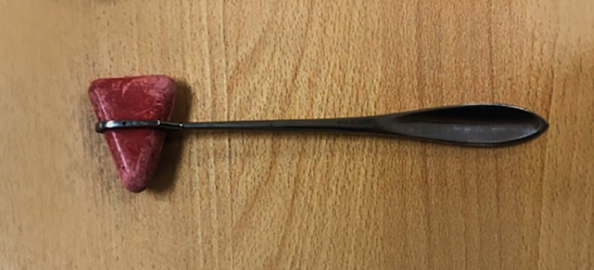
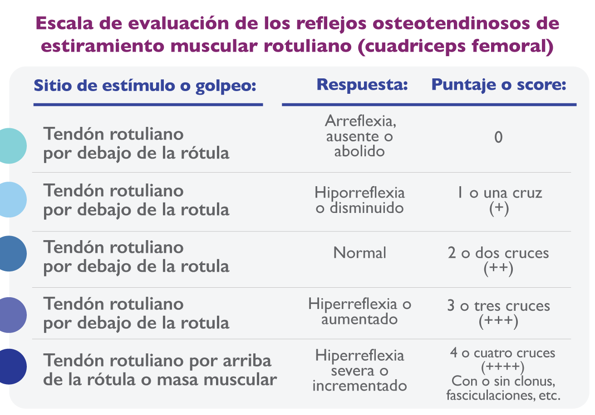
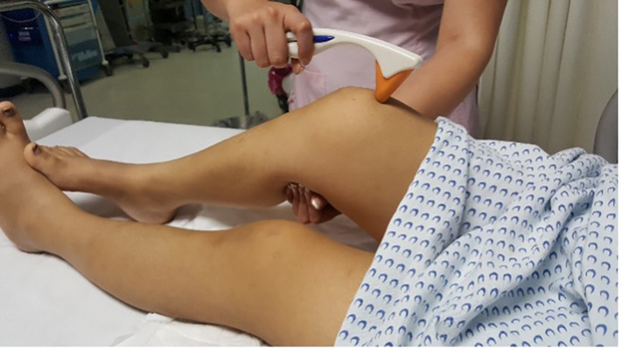

Nancy Allin Canedo Castillo
Presidente del Consejo Mexicano de Medicina Critica
Felipe de Jesús Montelongo
Consejero del Consejo Mexicano de Medicina Critica
drfelipemontelongo@hotmail.com
En nuestra formación académica desde estudiantes, en el internado, el servicio social y la misma residencia, adquirimos las bases tanto de la exploración clínica y la comprensión fenomenológica que la acompaña, así como de las fisiopatológicas que producen los signos y síntomas de todas las enfermedades. Es a través del interrogatorio, la exploración, la percusión, la inspección, la palpación y otros elementos básicos y sencillos que cada médico y/o enfermera (en su proceso de atención de enfermería, PAE) puede llegar a la integración de por lo menos un síndrome.
Sin embargo, con el avance de la medicina ciertos elementos de la clínica son menos usados, como la percusión del tórax y la exploración de reflejos osteotendinosos a menos que se trate de una patología neurológica dirigida. Paradójicamente observamos que este elemento de exploración clínica, sigue documentándose en los expedientes clínicos, notas medicas de ingreso, egreso, evolución e historias clínicas a pesar de no haberse explorado, desconocemos si es porque el médico no lo considera un elemento necesario, no recibió la preparación técnica para hacerlo o definitivamente no le da la importancia para revisarlo, pero lo consigna en el expediente clínico de la siguiente manera, por ejemplo: con ROTS normales (Reflejos Osteotendinosos normales). Esto cobra importante relevancia, cuando se trata de una paciente embarazada o incluso en el puerperio con preeclampsia.
La preeclampsia como causa de muerte materna
Los trastornos hipertensivos asociados al embarazo, en especial la preeclampsia, son la primera causa de mortalidad en el país, que para la semana epidemiológica 52, la razón de muerte materna se sitúa en un 30.1 defunciones por cada 100 mil nacimientos, con las enfermedades hipertensivas, edema y proteinuria en el embarazo, el parto y puerperio como la principal causa con 20.6% de muerte materna.1 Es importante mencionar que estos datos son antes de la pandemia de COVID-19 y que se han implementado recientemente estrategias exitosas para disminuir la muerte materna como el Código Mater,1,2 entre otras, esto no ha sido suficiente para una reducción más eficaz y que además pueda implementarse desde fases más tempranas en el desarrollo de embarazo y fuera de un entorno hospitalario, como en el domicilio de la paciente, solo empleando las bases más simples de la exploración clínica e incluso sin instrumentos como el martillo de los reflejos.
Martillo de Taylor para exploración de los reflejos.
La enfermedad de preeclampsia
Está definida como la hipertensión que se presenta en el embarazo después de la semana 20 de gestación en una mujer con presión arterial normal antes del embarazo;4,5 la preeclampsia con datos de severidad se da en pacientes que presentan cefalea intensa, náuseas y vómitos incoercibles, epigastralgia intolerable y la presencia de hiperreflexia osteotendinosa, clonus sistémico, de pie o de rodilla, temblor, fasciculaciones musculares o un estado de irritabilidad emocional, cuya presencia se vincula con el riesgo inminente de convulsiones (precursor de la eclampsia). Los signos neurológicos más comunes y premonitorios relacionados con el estado excitatorio central, y probablemente periférico, son la hiperreflexia osteotendinosa severa parcial o generalizada, con la presencia o no de mioclonías inducidas o espontaneas y fasciculaciones musculares espontaneas o también inducidas al golpetear una masa muscular, las cuales son sucesivas y progresivas en medida que avanza la enfermedad, hasta llegar a presentar la primera convulsión. Las convulsiones eclámpticas son emergencias que ponen en peligro la vida del binomio por lo que se debe actuar rápido para estabilizarla y terminar el embarazo. La presencia de estos signos reportados en la literatura ha variado en 50 a 90%.6
Por lo tanto, una herramienta obligatoria de la exploración clínica es la de los reflejos osteotendinosos, la cual debe ser objetiva y confiable, que lo que observa un explorador varíe lo menos posible en su interpretación, utilizando una escala clínica de los reflejos osteotendinosos que sea fácil de interpretar y precisa, que no genere confusión entre el mismo médico o paramédico que los explora o incluso en mismo grupo de clínicos, ya sean especialistas o no.
Proponemos que la escala de los reflejos osteotendinosos sea usada la del Hospital General Las Américas del ISEM, la única escala disponible para valorar los reflejos en pacientes obstétricas, ya que las que existen para pacientes con enfermedades neurológicas específicas, son complejas y no validadas en pacientes embarazadas.
ESCALA DE EVALUACION DE LOS REFLEJOS OSTEOTENDINOSOS DE ESTIRAMIENTO MUSCULAR ROTULIANO (CUADRICEPS FEMORAL)
Escala del Hospital General Las Américas y Terapia Intensiva. A continuación, valorar presencia de clonus y fasciculaciones. En caso de efecto de anestesia regional, explorar al reflejo bicipital, tricipital u otros. Esquema original con autorización del autor.
Esta escala es simple, fácil de realizar con un mínimo de capacitación, utilizando un martillo de reflejos, puede realizarse empleando la campana del estetoscopio o incluso el borde interno (cubital) del canto de la mano para golpear con movimientos cortos y semiligeros el tendón rotuliano o la masa muscular.
Exploración de los reflejos osteotendinosos utilizando la campana del estetoscopio o el borde interno del canto de la mano.
Es tan fácil de realizar e interpretar que la puede utilizar un estudiante de medicina, médicos internos, residentes o una enfermera en formación, y por supuesto médicos generales o especialistas, la clave es dar golpes por abajo o por arriba de la rótula.
Material suplementario:
Video instruccional sobre la exploración de los reflejos: https://youtu.be/W3AJJlpWx50
Exploración de los reflejos osteotendinosos por debajo y por arriba de la rótula, usando el martillo de reflejos.
Originalmente fue creada para terapias intensivas, 7 pero puede emplearse en cualquier lugar en donde se atiende a una paciente embarazada, en un consultorio, centro de salud, al arribo de triage de cualquier hospital y hasta en su domicilio.
Después de que detectamos a una paciente con hiperreflexia (3 ó 4+), aun no teniendo ningún otro signo o síntoma, como hipertensión, cefalea, edemas o de laboratorio como proteinuria, es la referencia oportuna y segura a centros hospitalarios resolutivos en donde se pueda atender y evaluar la posible interrupción del embarazo o buscar ayuda ncesaria. Lo que se pretende es que no se quede expectante ante la presencia de una hiperreflexia sino que se actúe, ya sea solicitando traslado o referencia a un centro hospitalario mayor o en un entorno hospitalario se proceda a activar Código Mater, para asegurar la toma de decisiones con un equipo multidisciplinario.
Podemos concluir que ante la detección de hiperreflexia a la exploración clínica en una paciente en el embarazo, parto o puerperio se pida ayuda de inmediato, esto salvara muchas vidas maternas.
Referencias bibliograficas:
1. Direccion General de Epidemiologia (DGE). Informe Semanal de Vigilancia Epidemiológica. Semana epidemiológica 52 (MM_2019_SE52).
2. Lineamiento Técnico. Triage Obstétrico, Código Mater y Equipo de Respuesta Inmediata Obstétrica [Internet]. Gob.mx. [citado el 17 de mayo de 2022]. Disponible en: http://cnegsr.salud.gob.mx/contenidos/descargas/SMP/web_TriageObstetricoCM.pdf.
3. Gutiérrez ML, Carmona AD, Montelongo FJ. Papel del índice de choque en embarazadas del tercer trimestre con hemorragia obstétrica para requerimiento transfusional atendidas en el Hospital General Las Américas. Med Crit 2019, 33 (1): 15-20.
4. Guías de Práctica Clínica. Prevención, diagnóstico y tratamiento de la preeclampsia en segundo y tercer nivel de atención. Evidencias y Recomendaciones. IMSS-020-08. 2017.http://www.cenetec.salud.gob.mx/descargas/gpc/CatalogoMaestro/020_GPC_Preeclampsia/SS_020_08_EyR.pdf.
5. Gutierrez JAR, Diaz JCM, Santamaria AMB et al. Asociación de factores de riesgo de preeclampsia en mujeres mexiquenses. 2016. Rev Nac (Itaguá) 8(1):33-42. doi: 10.18004/rdn2016.0008.01.033-042.
6. Cooray SD, Edmonds SM, Tong S, Samarasekera SP, Whitehead CL. Characterization of Symptoms Immediately Preceding Eclampsia. Obstet Gynecol. 2011;118(5):995-999. doi: 10.1097/ACOG.0b013e3182324570
7. Sierra AU, Martínez RZ, Cerón UD, Nando CCV. Terapéutica en Medicina Critica. (Cap. 26. Preeclampsia, eclampsia e inminencia de eclampsia y su tratamiento. Montelongo FJ). McGraw Hill/UNAM 2020 ISBN: 978-607-30-2441-9